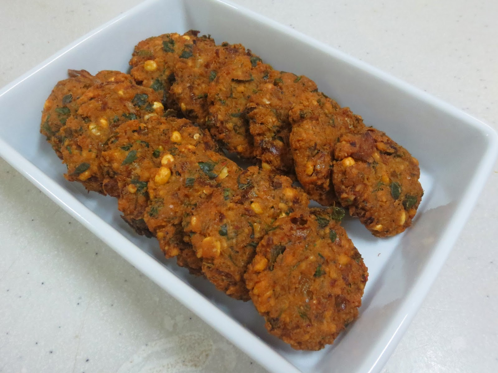

South Indian Recipes
South Indian RecipesBreakfast
Rice items
Sambars and Curry
Sweets
Snacks
 Masala vada, a popular South Indian snack, has a rich history deeply rooted in the culinary traditions of the region. Originating from the state of Tamil Nadu, masala vada has evolved over the years to become a beloved treat across South India. The history of masala vada dates back to ancient times when innovative cooks experimented with various ingredients to create flavorful and satisfying snacks. Traditionally associated with festive occasions and celebrations, masala vada quickly gained popularity due to its delightful taste and crunchy texture. The preparation of masala vada involves grinding soaked lentils, typically chana dal (split chickpeas), and mixing them with a blend of spices and herbs. Common additions include ginger, green chilies, curry leaves, and coriander, imparting a burst of flavors to the vada. The mixture is then shaped into flat, round patties and deep-fried until golden brown and crispy. What sets masala vada apart is its unique combination of textures and aromatic spices. The crispy exterior contrasts with the soft, flavorful interior, creating a delightful experience for the palate. The spices used in masala vada vary, allowing for regional nuances in taste. Some variations include the addition of fennel seeds or grated coconut, enhancing the complexity of flavors. Masala vada is often served with coconut chutney or tangy tamarind sauce, elevating its taste even further. It has become a staple at tea stalls, snack shops, and household gatherings, enjoyed by people of all ages. As South Indian cuisine continues to gain popularity worldwide, masala vada remains a cherished snack, representing the region's culinary diversity and the artistry of combining simple ingredients into a delightful treat.
Masala vada, a popular South Indian snack, has a rich history deeply rooted in the culinary traditions of the region. Originating from the state of Tamil Nadu, masala vada has evolved over the years to become a beloved treat across South India. The history of masala vada dates back to ancient times when innovative cooks experimented with various ingredients to create flavorful and satisfying snacks. Traditionally associated with festive occasions and celebrations, masala vada quickly gained popularity due to its delightful taste and crunchy texture. The preparation of masala vada involves grinding soaked lentils, typically chana dal (split chickpeas), and mixing them with a blend of spices and herbs. Common additions include ginger, green chilies, curry leaves, and coriander, imparting a burst of flavors to the vada. The mixture is then shaped into flat, round patties and deep-fried until golden brown and crispy. What sets masala vada apart is its unique combination of textures and aromatic spices. The crispy exterior contrasts with the soft, flavorful interior, creating a delightful experience for the palate. The spices used in masala vada vary, allowing for regional nuances in taste. Some variations include the addition of fennel seeds or grated coconut, enhancing the complexity of flavors. Masala vada is often served with coconut chutney or tangy tamarind sauce, elevating its taste even further. It has become a staple at tea stalls, snack shops, and household gatherings, enjoyed by people of all ages. As South Indian cuisine continues to gain popularity worldwide, masala vada remains a cherished snack, representing the region's culinary diversity and the artistry of combining simple ingredients into a delightful treat.
